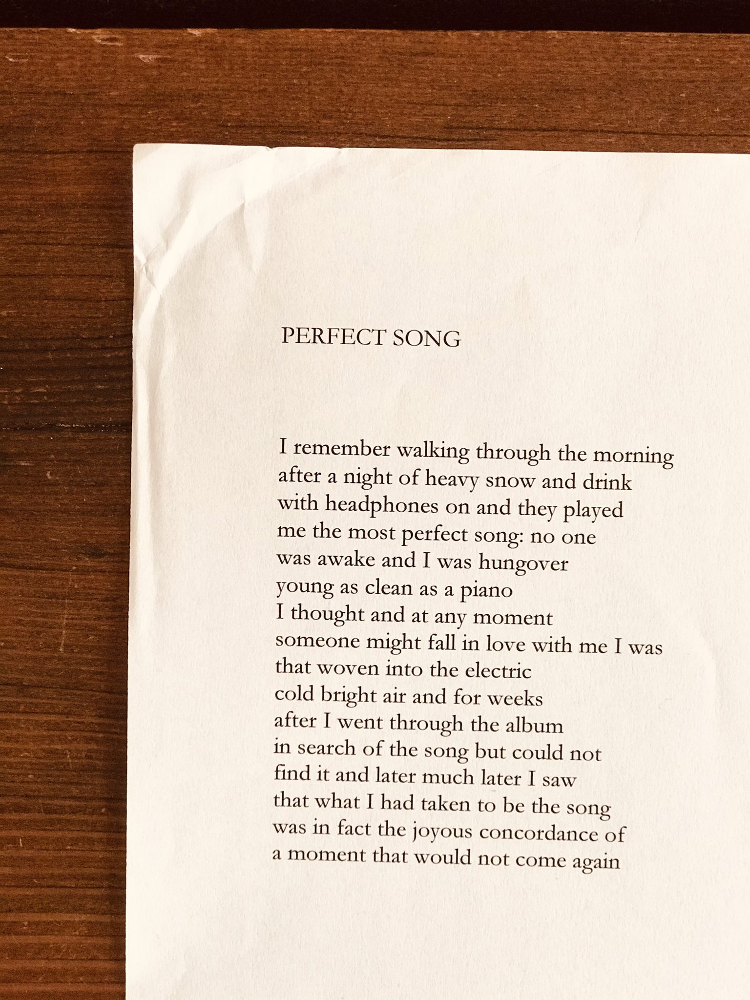
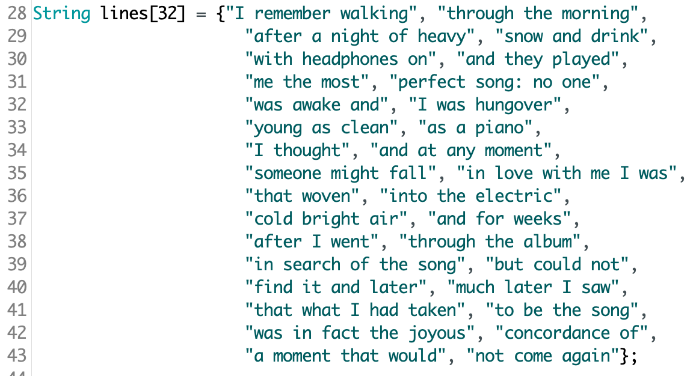
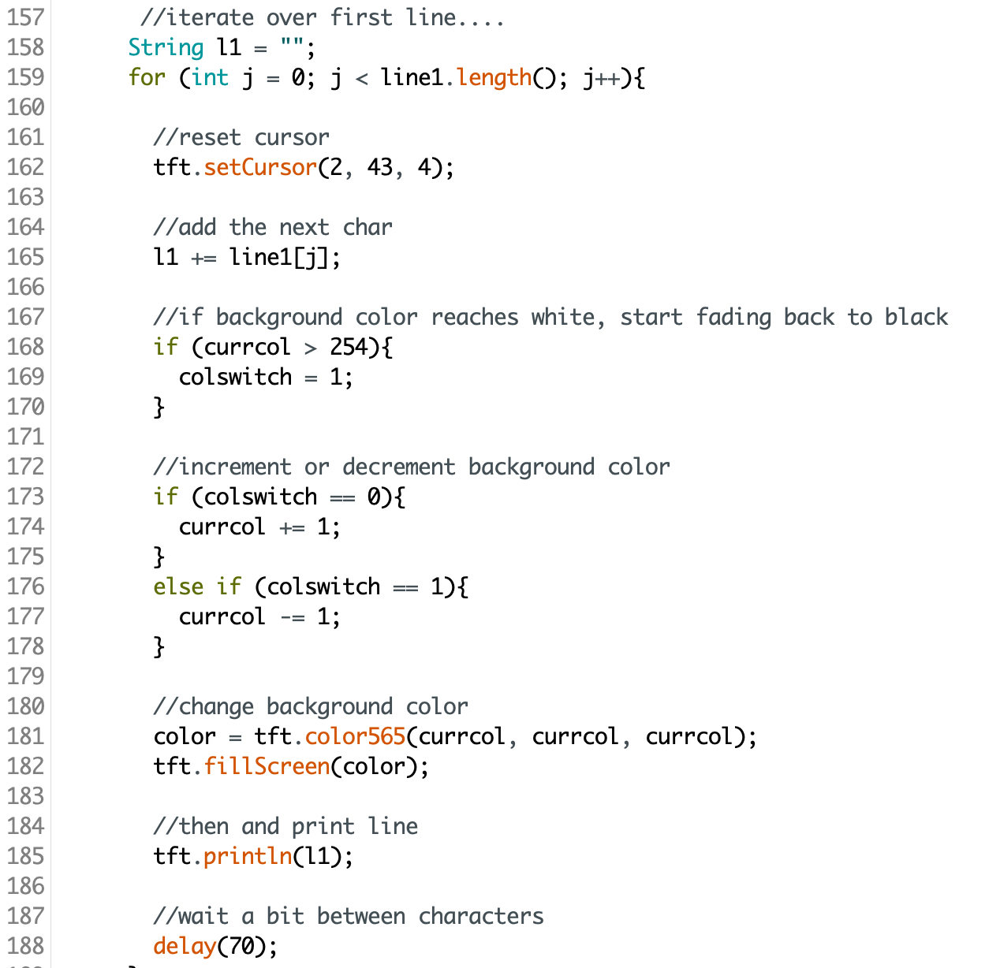
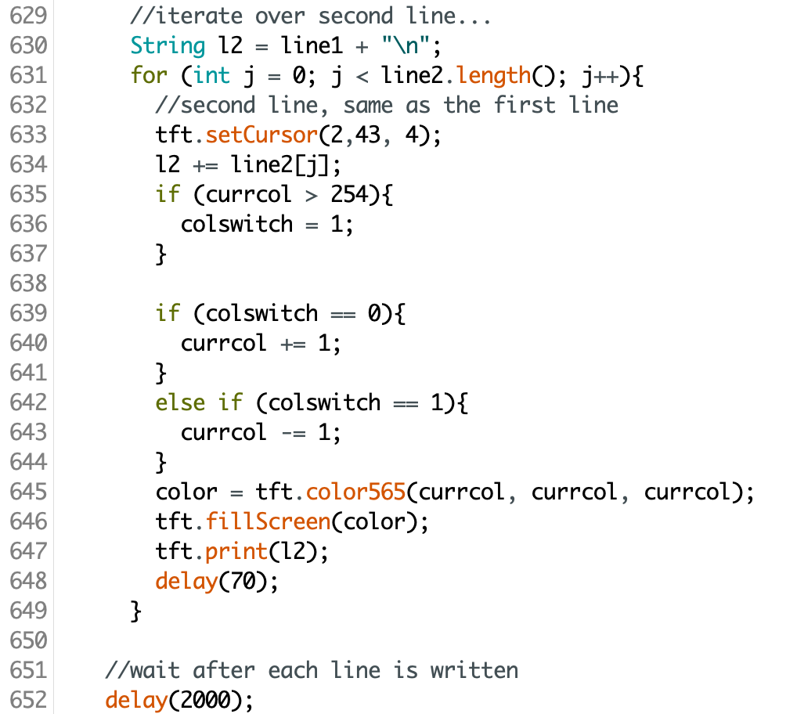
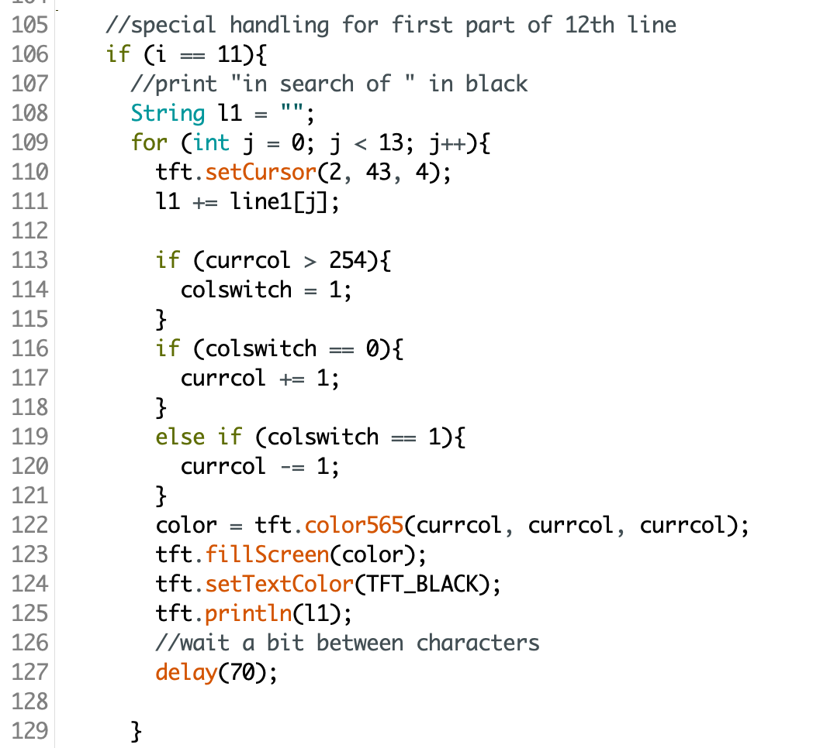
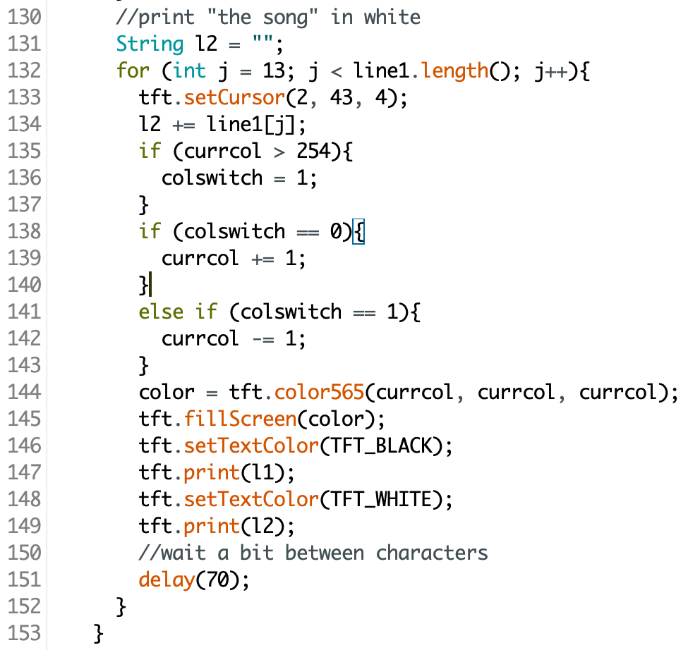
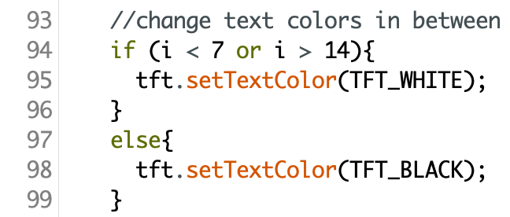

Creative Embedded Systems, Project 1: Generative Art
This project uses an ESP32 and the Arduino IDE to generatively display Heather Christle's poem, "Perfect Song",
for installation in the 5th-floor elevator lobby of Barnard College's Milstein library.
Each line of the poem appears letter by letter, as if typed. In the first half of the poem, each letter
is accompanied by a subtle brightening of the screen; in the second half, each letter dims the screen.
The overall effect is a gradual rise and fall of brightness in the screen throughout the poem. Certain words
in the poem are highlighted with different colors and/or timing.

ARTISTIC VISION
I chose to make each letter appear individually so that viewers would be more engaged by reading along
as the poem appeared. This gradual unveiling also mirrors the feeling of a slow, unhurried walk, which
is the subject of the poem.
I also really like the emotional structure of the poem: the beginning describes a very early morning walk,
and you can almost sense the sun rising as the narrator describes their happiness and expansive feelings.
Then, as they describe looking for the song and finally reach the poignant conclusion that they would
never again capture that exact moment, it feels like the poem settles back down and reaches a sunset. I wanted
to reflect this rising and falling feeling of the poem, so I decided to have the background color brighten
from black to white and then back to black.
Finally, when reading this poem, there were certain words that stood out to me: all the mentions of
"the perfect song", referencing the titular subject; "piano", in an unusual simile; "love", very timely
for Valentine's Day; and also "electric", because of the unexpected line break. I chose to highlight
these words with different colors. I also made the last three words, "not come again", take a bit longer
to appear, to reflect how the poem ends with the narrator's reluctant realization that this moment will
never be repeated.
REPRODUCTION
To reproduce this project exactly, simply go to the github repo and download the Arduino code.
Make sure your Arduino IDE has the necessary libraries installed for the ESP32, plug it in, and
upload the code!
To apply these same techniques to a different poem, keep reading through the CODE EXPLANATION section.
CODE EXPLANATION
I started by splitting each line of the poem in two, in order to fit on the display screen.

Every time we print a new letter, we also want the screen to change colors. This means we need to
fill the screen with the new color, and then print the previous string plus the new character.
For a normal line (no special words), printing the first half of the line looks like this:

We first reset the cursor to the starting point. Then, we add the next character to the string to be printed.
Next, check to see whether the background color has reached white or not; if so, decrement the RGB values,
and if it hasn't yet reached white, increment the RGB values, to get the newest color. Then, fill the screen
with the newest color, print the string, and wait before repeating.
To print the second half of the line, we use the same exact strategy, and simply add the first half
and a newline to the string to be printed.

For lines with special words, I dealt with them by splitting them up into normal sections and color sections.
For instance, for line 12 part 1, "in search of the song", I changed the color of "the song".
First, I printed "in search of " normally:

Then, I printed "the song" in a different color, making sure to first print "in search of ", change
font color, and then print "the song":

All the other special words are dealt with in a similar manner.
Finally, I hardcoded the switch from white font to black font, purely based on taste:

I also added code to display the title and author: